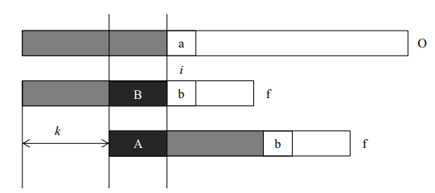

Dijkstra

KMP

Manacher


#include < iostream >
#include < stdio.h >
#include < queue >
#include < vector >
#include < string.h >
using namespace std;
const int INF=0x3f3f3f3f;
const int MAXN=100001;
bool vis[MAXN]; //是否访问标志
int dist[MAXN]; //存放距离,起点到每个点的最短距离
void Dijkstra(int n,int start) //n为结点个数，start为选取的起点
{
memset(vis,false,sizeof(vis));
for(int i=1;i<=n;i++)
dist[i]=INF;
priority_queue< qnode> que;
while(!que.empty()) que.pop();
dist[start]=0;
que.push(qnode(start,0));
qnode tmp;
while(!que.empty())
{
tmp=que.top();
que.pop();
int u=tmp.v; //u为当前队首作为起点
if(vis[u]) continue;
vis[u]=true;
for(int i=0;i < E[u].size();i++) //E[u].size()等价于节点数
{
int v=E[u][i].v; //v为指向的下一个节点
int cost=E[u][i].cost; //cost为当前起点u到目标点v的已知长度
if(!vis[v]&&dist[v]>cost+dist[u]) //比较起点直接到v点，和先到u点再到v点的路径
{
dist[v]=dist[u]+cost;
que.push(qnode(v,dist[v])); ///将目标点塞入队列，进行下一次松弛
}
}
}
}
#include < iostream >
#include < string.h >
using namespace std;
int next[101];
void getNext(int* next,char* p){
int i,n,k;
n=strlen(p);
next[1]=next[0]=0;
k=0;
for(i=2;i<=n;i++){
for(;k!=0&&p[k]!=p[i-1];k=next[i]);
if(p[k]==p[i-1])k++;
next[i]=k;
}
}
void kmp(char* text,char* p,int* next)
{
int len_t,len_p,s,q;
len_t=strlen(text);
len_p=strlen(p);
q=s=0;
while(s < len_t){
for(q=next[q];q < len_p && p[q]==text[s] ; q++,s++);
if(q==0)s++;
else if (q==len_p){
cout<<"匹配开始位置为："<< s-len_p+1<<"´处"<< endl;
}
}
}
int main()
{
char p[]="ca";
char text[]="cacca";
getNext(next,p);
kmp(text,p,next);
return 0;
}

#include < iostream >
using namespace std;
const int MAXN = 1e5+4;
char S[MAXN],T[MAXN];
int P[MAXN*2];
void manacher(char s[], int len)
{
int l = 0;
T[l++]='$',T[l++]='#';
for(int i=0;i < len; i++)
{
T[l++]=s[i];
T[l++]='#';
}
T[l]=0;
int r=0,c=0;
for(int i = 0;i< 1;i++)
{
int &p=P[i];
p = r > i ? min(P[2*c-i],r-i) : 1;
while(T[i+p]==T[i-p]) p++;
if(i + p > r) r = i + p, c = i;
}
}


#include < iostream >
#include < cmath >
using namespace std;
int c[6]={0,2,2,4,5,6};
int w[6]={0,6,3,6,4,5};
int dp[11]; //
int pack()
{
int v=10;
for(int i=0;i<=v;i++)
dp[i]=0;
for(int i=1;i<=5;i++)
for(int j=v;j>=c[i];j--)
dp[j]=max(dp[j],dp[j-c[i]]+w[i]);
return dp[10];
}
int main()
{
cout << pack();
return 0;
}

#include < iostream >
#include < queue >
#include < algorithm >
using namespace std;
int dir[4][2]={0,1,0,-1,1,0,-1,0};
struct State{
int x,y=0;
int px,py=0;
int stepCount=0;
};
queue < State > q;
State dp[6][6];
int bfs(State st,State _end)
{
State now,next;
dp[1][1].x=st.x;
dp[1][1].y=st.y;
q.push(dp[1][1]);
a[st.x][st.y]=1;
while(!q.empty())
{
now=q.front();
q.pop();
if(now.x==_end.x && now.y==_end.y)
return now.stepCount;
for(int i=0;i < 4;i++)
{
next.x=now.x+dir[i][0];
next.y=now.y+dir[i][1];
if(next.x < 0 || next.y < 0 || next.x > = 6 || next.y > = 6 || a[next.x][next.y]==1)
continue;
dp[next.x][next.y].x=next.x;
dp[next.x][next.y].y=next.y;
dp[next.x][next.y].px=now.x;
dp[next.x][next.y].py=now.y;
a[next.x][next.y]=1;
dp[next.x][next.y].stepCount=dp[now.x][now.y].stepCount+1;
q.push(dp[next.x][next.y]);
}
}
}